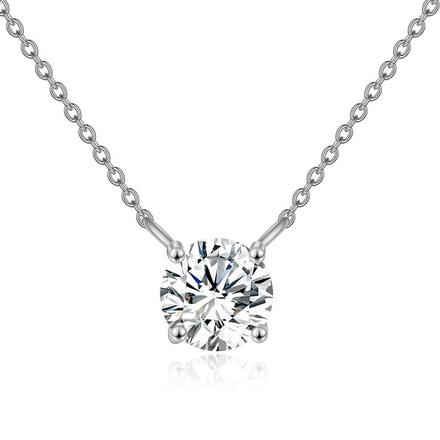
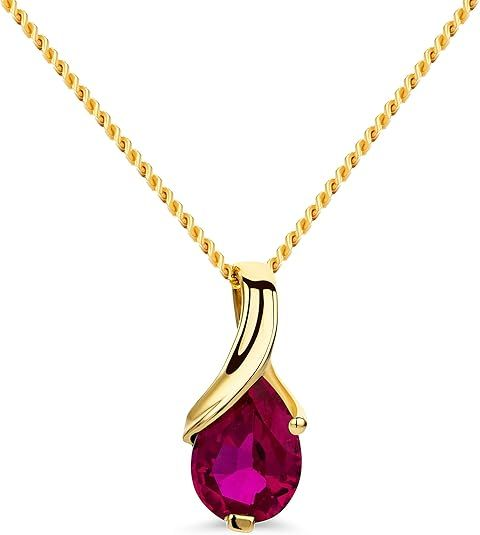
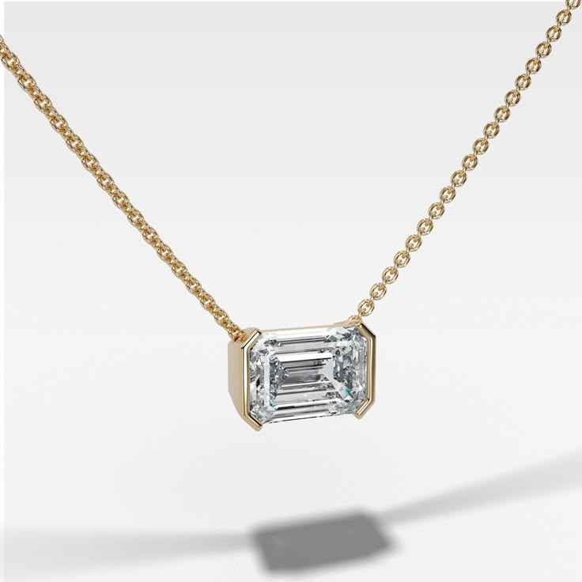

Elegant Clover Necklace

This elegant clover necklace is a symbol of luck, beauty, and timeless style. Its delicate clover design makes it a subtle yet meaningful accessory that fits effortlessly into any outfit.
Designed for everyday wear, this piece works beautifully with casual looks, office outfits, or evening styles. The minimalist gold-tone finish gives it a refined and modern aesthetic without being too flashy.
It’s also a perfect gift choice — whether for birthdays, special occasions, or simply to show appreciation. A simple piece that carries elegance and meaning in one design.
View on Amazon & Buy Now14K Gold Moissanite Necklace (Luxury Sparkle That Turns Heads)

If you’ve been craving that luxury diamond look without the overwhelming price tag, this moissanite necklace is exactly what your jewelry collection is missing. The brilliance is unreal — it catches light from every angle and instantly elevates your entire look.
Whether you're dressing up for a night out or just want to feel a little more put together during the day, this piece gives you that effortless glow. It’s minimal, elegant, and powerful in the most subtle way.
Why it’s worth it: You get the sparkle of a high-end diamond piece at a fraction of the cost — without sacrificing elegance.
Key features: 14K solid gold, 4-prong setting, brilliant round-cut moissanite, timeless solitaire design.
Why people love it: It looks insanely expensive, shines brighter than expected, and instantly upgrades any outfit.
View on Amazon & Buy Now14K Gold Birthstone Necklace (Personalized Elegance You’ll Never Take Off)

This isn’t just a necklace — it’s a piece that feels personal. Whether it represents your birth month or someone special in your life, this gemstone necklace adds meaning to your everyday style.
The soft glow of real gemstones combined with 14K gold creates a look that feels both luxurious and deeply sentimental. It’s the kind of piece you reach for daily without even thinking about it.
Why it’s worth it: You’re not just wearing jewelry — you’re wearing something that tells a story.
Key features: Genuine gemstone options (ruby, sapphire, emerald, topaz, amethyst), 14K gold chain, classic pendant design.
Why people love it: It feels meaningful, makes a perfect gift, and adds a personal touch to any outfit.
View on Amazon & Buy NowEmerald Cut Diamond Necklace (Clean, Modern Luxury Look)

There’s something about an emerald cut that just feels different — cleaner, sharper, and effortlessly sophisticated. This necklace gives you that quiet luxury vibe without trying too hard.
The horizontal setting adds a modern twist, making it perfect for layering or wearing on its own when you want a sleek, minimal statement.
Why it’s worth it: It delivers that high-end, editorial look you usually only see in luxury jewelry brands.
Key features: IGI certified lab-grown diamond, emerald cut, 14K gold, adjustable 16–18 inch chain.
Why people love it: It looks modern, expensive, and incredibly versatile for both daily wear and special occasions.
View on Amazon & Buy Now